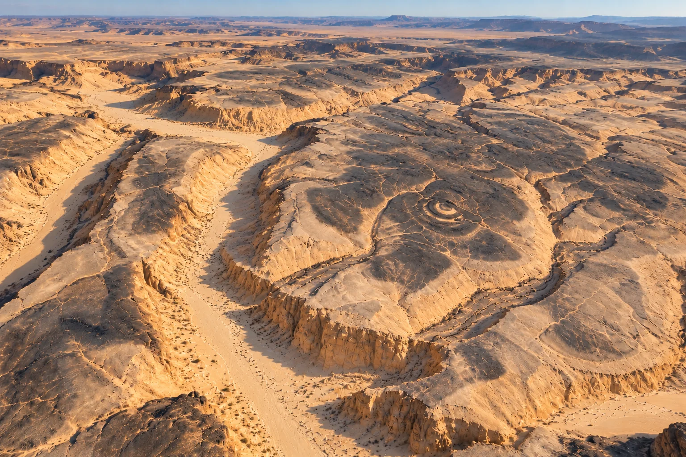
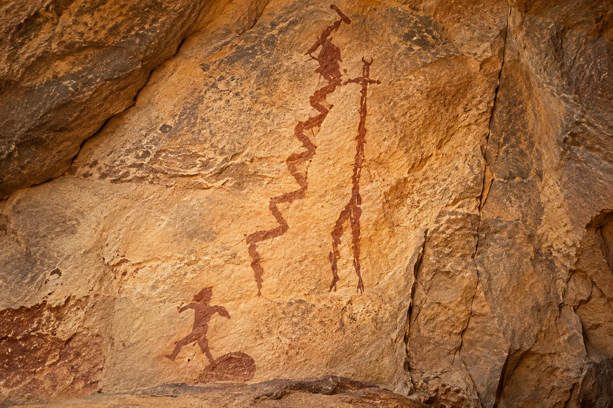

01
Cairo Airport Museum
Cairo & Giza30°06′45″N 31°23′57″E
From Cairo's monuments to the remote Western Desert, follow the places, landscapes, and history that make every journey unforgettable.
Browse 35 points of interest, with selected photographs and artistic reconstructions. Search by place or GPS coordinates, and open each entry directly in Google Maps.

Both faces of the Narmer Palette, photographed together.

The Great Sphinx with the Great Pyramid rising behind it.

A fossil whale skeleton in the open desert at Wadi El-Hitan, not inside the museum.

The archaeological entrance trench at Mentuhotep II’s mortuary complex.
Passage and excavation diagram ↗
Both statues and the Theban mountains beyond.

Artist’s visualization of the Desert Eye, the surrounding cliff and the Path of Tears.
_(4968893546).jpg)
Mudbrick defensive walls and massive round towers of the Roman fortress.

Stalactites fill the vast chamber as daylight floods the sandy cavern floor.

Interpretation of Composition D-II: two human figures, a zigzag line, and a stone beside the lower figure. Not an archaeological photograph.
Same mapped coordinates as Djara Cave (#33); the art location is not independently pinpointed.Licensed photographs are shown from Wikimedia Commons and may require an internet connection. Links open their original source. Website thumbnails may be cropped by the page layout; the underlying source files are not altered.
Illustrative art should not be mistaken for archaeological evidence. Visit the linked original photographs for unmodified images and complete terms. The GPS coordinates were supplied for the index and are not route guidance.